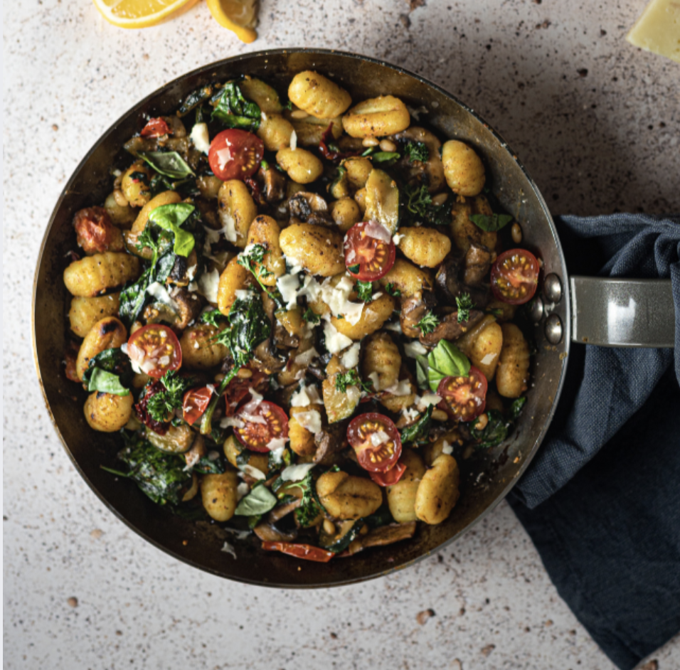

gnocchi
INGREDIENTS
- 200g pommes de terre
- 50g Mehl - Farine
- 1 jaune d‘oeuf
- sel, poivre, noix de muscade

INSTRUCTIONS
- Faites cuire dans de l'eau les pommes de terre ; dès qu’elles sont cuites et tendres, pelez-les et écrasez-les avec le presse-purée. Mélangez tous les ingrédients jusqu’à ce que vous obteniez une pâte compacte et homogène.
- Ajoutez le sel, le poivre et la noix muscade. Séparez la pâte en différentes portions, puis formez des rouleaux de la taille de vos doigts que vous couperez en petits cylindres d’environ 2 cm.
- Prenez une fourchette pour donner aux gnocchis leur forme concave typique.
- Faites cuire les gnocchis dans un grand volume d’eau salée. Retirez les à l’aide d’une écumoire dès qu’ils remontent à la surface.
Servez-les assaisonnés à votre choix.